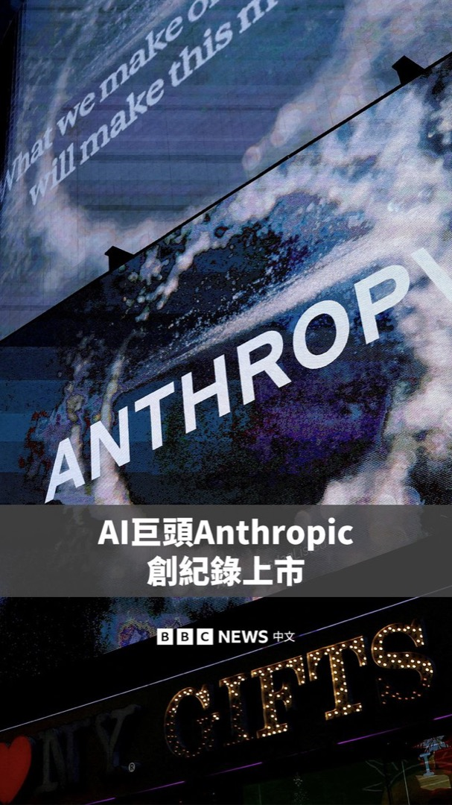
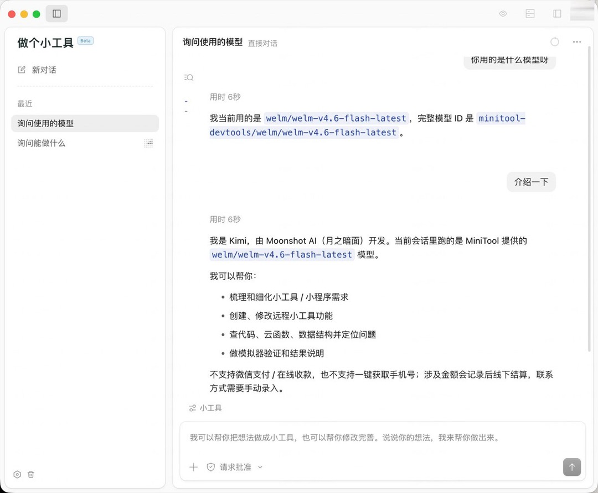
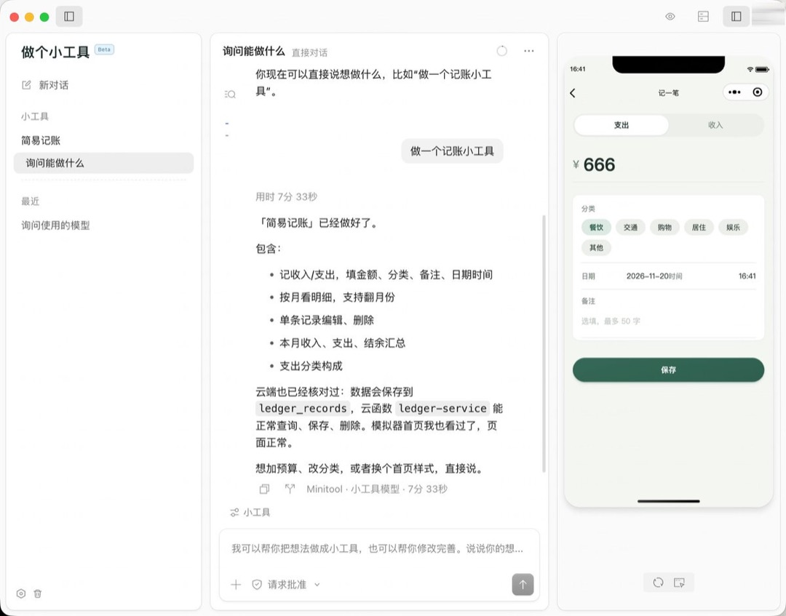
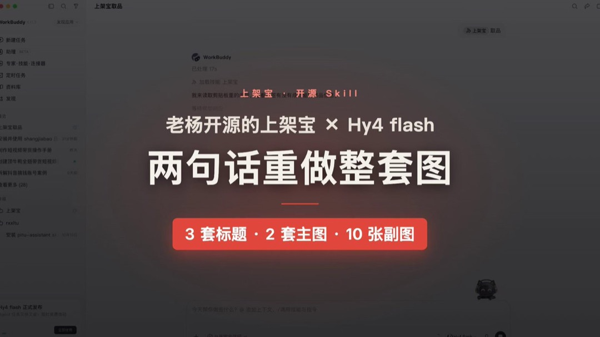
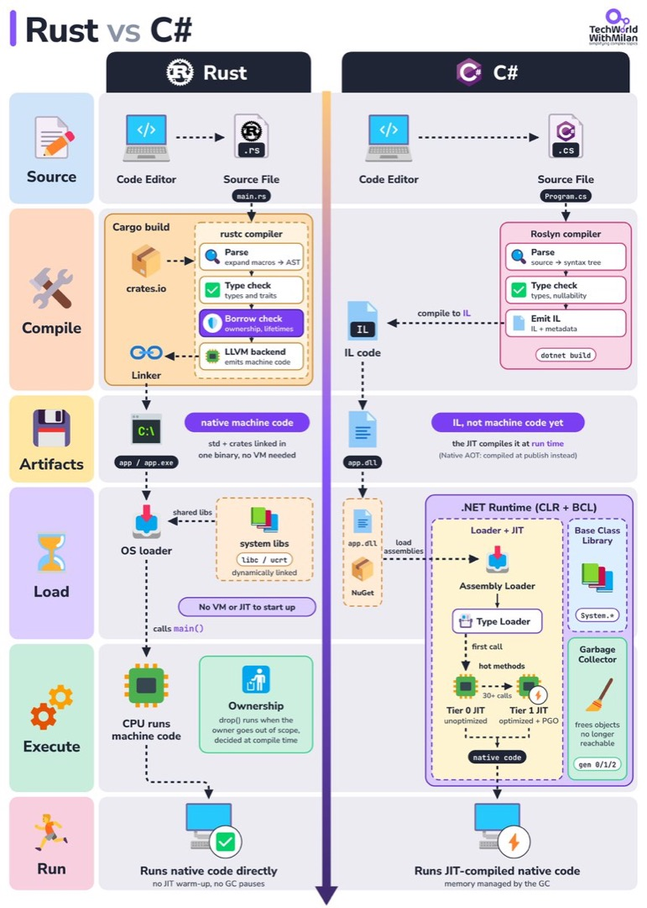
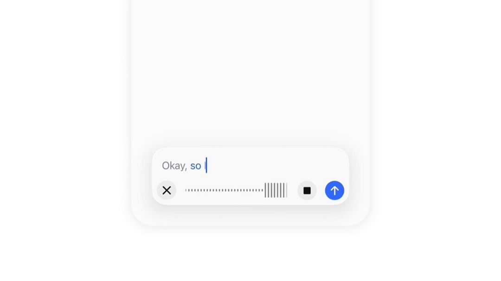

本期速览
02 tufazip纯神经网络压缩维基百科
04 Anthropic IPO开盘估值破2万亿
06 Netflix用GraalVM原生镜像提速
08 知网万方维普AI检测结果悬殊
10 ChatGPT语音输入支持边说边出字
01｜Fable 5.2打造可玩GTA深圳
来源（X） · @Saccc_c · 2026-11-18 19:05
下面这个demo是 APEC 核心区域的游戏周边展示，后续会开放游戏内测版本，游戏名为《GTA Shenzhen：我们都是深圳人》，大家感兴趣的话可以持续关注！
整体工作流是 Fable 5.2 用 threejs+blender，纯代码完成全部建筑场景的搭建；再用 Tripo 添加真实人物、汽车等城市元素，新增的画布agent模式非常方便批量处理人物细节
02｜tufazip纯神经网络压缩维基百科
来源（X） · @HeLi8866 · 2026-11-20 16:15
这个项目叫 tufazip。在大型文本压缩基准测试中，它拿下了“仅以纯神经网络作为唯一预测器”这一路线的最佳成绩。
目前排在它前面的所有方案，无一例外，全都是采用了“Transformer + 手工构建模型”的混合模式。
纯靠神经网络能把压缩率做到这个地步，确实非常夸张。
完整文章在这：
https://tufalabs.ai/research/tufazip/
03｜豆包工作模型计费倍率降至0.01
来源（X） · @Saccc_c · 2026-11-20 16:57
豆包工作最近推出了一系列优惠政策，包括但不限于针对用户日常使用率较高的模型计费倍率下调至 0.01 、部分模型小额消耗直接免费等，关键是每月签到还免费送 8800 额度
所以我们可以看到在很多办公实际测试中，豆包工作 + DeepSeek V4.1 Flash 的组合完全等于免费白嫖呀
第一时间我也进行了测试，主要测的是 3D 场景，分别用豆包工作和同类型的办公 Agent Harness，搭配DeepSeek V4.1 Flash，复刻上海滩的经典场景
整体建筑表现上，豆包工作和同类产品完成度相当，细节上我觉得豆包工作更优。但是最关键的是价格， 豆包工作花费 2.4 元，同类产品 5.2 元（因为我进行了多轮迭代），详细对比大家可以看下面的视频
关键是现在豆包工作还免费送积分呀，你完全可以自己测试对比后再选择
字节一定是最懂大众普惠需求的，豆包工作非常有望成为被最多人使用的 Agent Harness
04｜Anthropic IPO开盘估值破2万亿
来源（X） · @bbcchinese · 2026-11-20 16:49
不过，该股涨幅在当日交易过程中逐渐收窄，与此同时，科技股整体走低。这也引发了市场对投资者能否继续维持对AI热潮的信心的质疑。

05｜腾讯AI一句话生成微信小工具
来源（X） · @abskoop · 2026-11-20 16:48
主打在电脑端用ai 手搓小工具
一句话就能帮你做一个小工具
试了一下
7分33秒就帮我做了一个记账小程序
目前不能做微信支付/在线收款，也不能做一键手机号授权
还是不错啊🤡 普通用户都可以一句话做小工具，开发者危⚠️了


引用内容
ahhhhfs @abskoop
在电脑上用AI打磨灵感 做小工具
目前还要报名 开放🤡
06｜Netflix用GraalVM原生镜像提速
来源（X） · @alina_yurenko · 2026-11-20 14:53
中文译文
GraalVM 大获成功！🚀 很高兴看到 Netflix 在其 AI 编码代理工具中使用 GraalVM Native Image，以实现快速启动和小内存占用：https://blog.jetbrains.com/ai/2026/10/how-netflix-made-ai-coding-agents-more-efficient/
原文
GraalVM for the win! 🚀 Great to see Netflix using GraalVM Native Image in its AI coding agent tooling for fast startup and a small memory footprint: https://blog.jetbrains.com/ai/2026/10/how-netflix-made-ai-coding-agents-more-efficient/
07｜上架宝接入WorkBuddy批量做商品图
来源（X） · @0xlangeai · 2026-11-20 16:41
两句话，重做3套标题、2套主图、10张副图。闲鱼上架前存图、改字、做图这堆碎活，有人把它串进 WorkBuddy 了。
还带版权风险检查，「学而思奥数全套视频」直接亮红灯。不过价格仍会漏读，发布前还是需要自己核一遍。
引用内容
老杨啊 | AI产品商业化 @yhslgg
上周我开源的「上架宝」，今天直接把它装进 WorkBuddy，直接用腾讯混元 Hy4 flash。三步就搞定全流程：
1、WorkBuddy 里上传上架宝 Skill，模型选 Hy4 flash；
2、在同行商品页点一下「带到上架宝」书签，回来打「取品」两个字；
3、丢一句「把取好的产品标题和图片重新优化一下」，再补一句「继续生成产品副图」。
结果：
1、取品 23 秒回执，7 张图一张不落；
2、一句话重做标题和图，5 分 24 秒交回 3 套标题、1 份说明、2 套主图；
3、再补一句，10 张副图全出齐；
4、顺手问它「学而思奥数全套视频」能不能发，39 秒直接告诉你：硬红灯，不能发。
拆开说，取品回执里平台、编号、标题都对，
它还主动提醒：同行的文案和图只能参考，句子要重写、图要重做，别原样发。
重做交回来的东西也不是糊弄：
（1）3 套标题，每套 24–30 字，主打的搜索词各不一样
（2）一份说明：这是什么、适合谁、怎么用、发货说明，全写好了
（3）2 套主图，一套暖色编辑风，一套深色科技风
（4）10 张副图：你会拿到、适合谁、核心卖点、怎么发货、购买须知，两套各 5 张
更狠的是查标题。
「学而思」在版权名单里，「奥数全套视频」是机构课程打包，K12 学科培训本身就敏感，三层理由给完，
它没教我怎么绕审核，反而给了能做的路：
自己出练习题做自制教辅，标题里不带机构名、课程名、老师名。
当然也有毛病：
价格它说「对方没标」，页面上其实写着 1.6 元，书签没读到，它照实说了没编；
重做的文件存进了 kuatu 文件夹，少打一个 i；副图要我再追一句才出。
说白了，这玩意儿真正值钱的不是帮你写标题，是把「存图、改字、重做图、查版权」这一整套苦力活从你手里接走了。
以前上一个品，大半天耗在复制粘贴和抠图上。现在你就干一件事：看一眼，挑一套，发。
你想想，招个美工还得带、还得教、还得等。这个不用招人，两句话，10 分钟左右全出齐。
而且不止闲鱼，做小红书的拿它出笔记图，做淘宝拼多多的拿它批量上新，开好几家店的拿它铺品。
会抄同行的卖家一抓一大把，
会照着同行重做一套、还先查过版权的，早就在别人存图的时候把品上了。

08｜知网万方维普AI检测结果悬殊
来源（X） · @whyyoutouzhele · 2026-11-20 16:40
11月19日，澎湃新闻报道，记者实测知网、万方、维普三大论文AI检测平台，发现同一篇纯AI生成论文检出率从7.15%至69.8%不等，一篇人工原创论文却被判定含有25%至36%的AI内容。
部分高校将AI检出率作为毕业审核标准。专家批评检测算法不可靠，呼吁建立人工复核机制，避免误判损害学生权益。
引用内容
李老师不是你老师 @whyyoutouzhele
AICG检测标准不透明，上线前未经过评审，从未披露准确率，同一份文章检测结果可以相差数倍，很多机构机构却将“AI率”作为论文是否达标的门槛。
为了通过检测，写作者只能反复修改，将符合专业写作规范的文字改为拗口、口语化的表达，既消耗时间和金钱，也损害论文质量。
评论区：
“ 知网把之前所有AIGC的检测费用全部退回，挣到的不义之财全都吐出来吧。 ”
“中药名都能查重，还能自己编名不成 ”
“参考文献部分ai率全标红”
此前，不少网友反映：知网 AIGC 检测系统更新后，同一篇文稿复测后AI生成率显著上涨~纯人工撰写的段落被标记为疑似 AI 生成，就连经典文学作品也被检出很高的生成率，检测结果波动引发了广泛关注。
对此，知网客服曾回应：知网于10月24日完成了系统算法升级，升级后检测的AI疑似率会更高，目前属于版本选代的过渡阶段；AIGC检测得到的疑似率仅为参考指标，不能单独作判定文本由 AI生成的最终依据。
09｜Rust编译期管理内存，C#依赖GC
来源（X） · @milan_milanovic · 2026-11-19 15:28
中文译文
𝗥𝘂𝘀𝘁 vs 𝗖#
最近我们看到很多项目用 Rust 进行重写。那么，让我们来看看它们有什么不同。两者都运行原生机器码，但它们到达那里的路径截然不同。
𝗥𝘂𝘀𝘁 (𝗿𝘂𝘀𝘁𝗰 + 𝗟𝗟𝗩𝗠)：
🔹 源代码 → rustc → LLVM → 链接器 → 一个原生二进制文件（app / app.exe）。
🔹 Cargo 从 http://crates.io 下载 crates 并从源代码编译它们。
🔹 𝗯𝗼𝗿𝗿𝗼𝘄 𝗰𝗵𝗲𝗰𝗸𝗲𝗿（借用检查器）在任何机器码产生之前就静态分析所有权和生命周期。
🔹 std 和其他 crate 默认被静态链接到二进制文件中。libc / ucrt 通常以动态方式链接。
🔹 可执行文件不需要运行时或 JIT。操作系统将其加载到内存中，main() 开始执行。
🔹 内存由编译器在所有者超出作用域时插入的 drop() 胶水代码确定性地释放，因此 𝗻𝗼 𝗴𝗮𝗿𝗯𝗮𝗴𝗲 𝗰𝗼𝗹𝗹𝗲𝗰𝘁𝗼𝗿（没有垃圾收集器）。
𝗖# (.𝗡𝗘𝗧 𝗥𝘂𝗻𝘁𝗶𝗺𝗲)：
🔸 源代码 → Roslyn → IL + 元数据 → app.dll。还没有机器码。
🔸 NuGet 包只是 .dll 文件，在运行时加载。
🔸 CLR 从程序集中的元数据创建类型。
🔸 方法在首次调用时被 JIT 编译为 𝗧𝗶𝗲𝗿 𝟬（快速，最低限度优化）。30 次调用后，方法可以重新编译为 Tier 1（完全优化 + Dynamic PGO，自 .NET 8 起默认开启）。
🔸 𝗚𝗖（垃圾收集器）清理不再被引用的对象（第 0/1/2 代），这可能导致 stop-the-world（全停顿）。
🔸 Native AOT 则改为在发布时编译为原生机器码。它不允许运行时代码生成，并且需要裁剪（trimming）。
⚖️ 权衡取舍：
• 在 Rust 中，你在 𝗰𝗼𝗺𝗽𝗶𝗹𝗲 𝘁𝗶𝗺𝗲（编译时）就回答了"谁来释放这块内存？"。编译器可以很严格，你得到的是一个没有预热、没有 GC 停顿的二进制文件。
• 在 C# 中，这个问题在 𝗿𝘂𝗻 𝘁𝗶𝗺𝗲（运行时）才被回答。你付出的代价是 JIT 预热和 GC 停顿，但你得到的是一个在执行过程中不断优化你代码的运行时。
回到你这边，你的下一个服务你会选择哪一个，为什么？
原文
𝗥𝘂𝘀𝘁 𝘃𝘀 𝗖#
We see a lot of rewrites to Rust recently. So, let's see how they are different. Both are running native machine code, but they get there at very different times.
𝗥𝘂𝘀𝘁 (𝗿𝘂𝘀𝘁𝗰 + 𝗟𝗟𝗩𝗠):
🔹 Source code → rustc → LLVM → linker → one native binary (app / app.exe).
🔹 Cargo downloads crates from http://crates.io and compiles them from source.
🔹 The 𝗯𝗼𝗿𝗿𝗼𝘄 𝗰𝗵𝗲𝗰𝗸𝗲𝗿 statically analyzes ownership and lifetimes before any machine code exists.
🔹 std and other crates are statically linked into the binary by default. libc / ucrt are typically linked dynamically.
🔹 The executable doesn't need a runtime or JIT. The OS loads it into memory and main() starts executing.
🔹 Memory is freed deterministically by drop() glue code the compiler inserts when the owner goes out of scope, so there is 𝗻𝗼 𝗴𝗮𝗿𝗯𝗮𝗴𝗲 𝗰𝗼𝗹𝗹𝗲𝗰𝘁𝗼𝗿.
𝗖# (.𝗡𝗘𝗧 𝗥𝘂𝗻𝘁𝗶𝗺𝗲):
🔸 Source code → Roslyn → IL + metadata → app.dll. No machine code yet.
🔸 NuGet packages are just .dll files, loaded at run time.
🔸 The CLR creates the types from the metadata in the assemblies.
🔸 Methods are JIT-compiled the first time they are called, as 𝗧𝗶𝗲𝗿 𝟬 (quick, minimal optimizations). After 30 calls, a method can be recompiled as Tier 1 (full optimizations + Dynamic PGO, on by default since .NET 8).
🔸 The 𝗚𝗖 cleans up objects that are no longer referenced (gen 0/1/2), which can cause stop-the-world pauses.
🔸 Native AOT compiles to native machine code at publish time instead. It doesn't allow runtime code generation, and it needs trimming.
⚖️ The trade-off:
• In Rust you answer "who's going to release this memory?" 𝗮𝘁 𝗰𝗼𝗺𝗽𝗶𝗹𝗲 𝘁𝗶𝗺𝗲. The compiler can be strict, and you get a binary with no warm-up and no GC pauses.
• In C# it's answered 𝗮𝘁 𝗿𝘂𝗻 𝘁𝗶𝗺𝗲. You pay with JIT warm-up and GC pauses, and you get a runtime that keeps optimizing your code during its execution.
Back to you, which one would you choose for your next service, and why?

10｜ChatGPT语音输入支持边说边出字
来源（X） · @FinanceYF5 · 2026-11-20 16:21
新推出的 Live Dictation 会在说话时实时转成文字，减少说完后等待转写的时间。官方表示，速度和稳定性都有提升。
平时习惯用语音输入长段内容的话，这个更新会方便不少。
